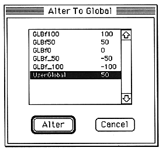

■ Define / use / cancel global coefficients
● The coefficient RAM inside the DSP can be saved.
● It is possible to easily change the parameters of multiple modules in conjunction.
The parameters that can be globalized are limited to those displayed in units of "%" on the parameter editor screen of each module. One user-defined global information exists for one algorithm.
Globalized parameters can be edited in the DefineGlobal window. In addition, parameters that are globalized with the same global coefficient change in conjunction with editing in the DefineGlobal window.
DefineGlobal window

AlterToGlobal window
